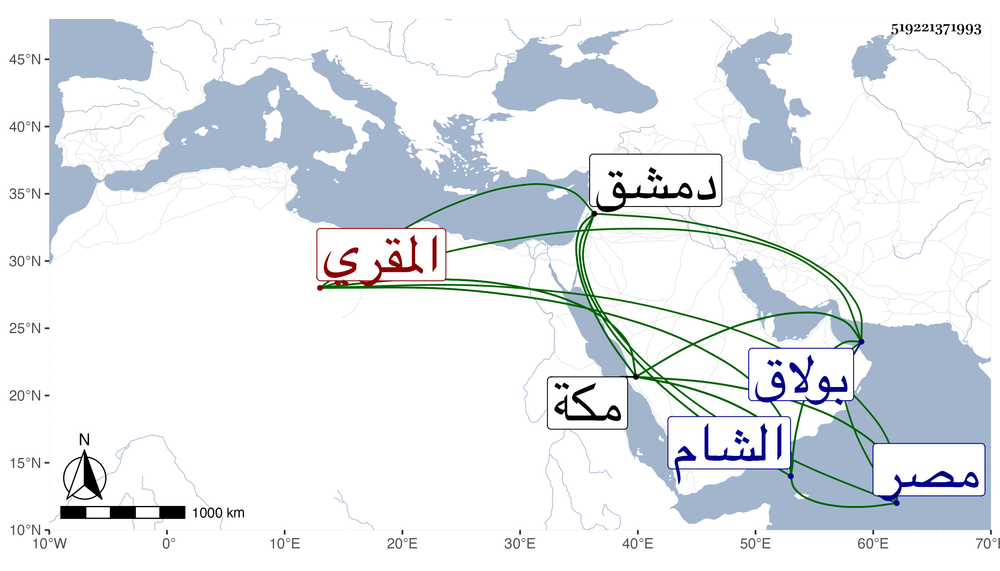

0902Sakhawi.DawLamic.ITO20230111-ara1.EIS1600.519221371993
Biography ID: 519221371993
508
شمس الدين بن خليل المقري أحد أعيانهم وممن ذكر بجهورية الصوت مات في ربيع الثاني أو جمادى الأولى سنة إحدى وتسعين عن نحو السبعين وقد كف وابن خليل آخر شافعي اسم جده أحمد مضى في المحمدين وابن بطالة في الأبناء وابن الركن المعري محمد بن أحمد بن علي بن سليمان وابن العيار في المحمدين ممن لم يسم آباؤهم وابن كاتب الورشة القبطي ويلقب بالوزة مضى في نصر الله وابن منهال مات في سنة احدى أرخه شيخنا في انبائه والأزهري في محمد ابن علي بن حسن والأسيوطي فيمن سمع من شيخنا والبابي في محمد بن اسمعيل ابن الحسن بن صهيب والبصروي محمد بن عبد الرحمن بن عمر بن عبد العزيز والبغدادي الحنبلي محمد بن محمد بن جميل . وآخر اسمه محمد بن علي بن عيسى تزوج الموفق بن المحب بن نصر الله أخته والجويعين الشاعر نزيل بولاق مدح شيخنا ومن نظمه يهجو تلميذا له يعرف بابن فخر مما سمعه منه عبد القادر القرشي
| حديث ابن فخر حين جاء مسلسلا | وقد قرروه بان للناس واشتهر |
| روى الأعمش الضوى أن مداره | على قول مسروق فسلسله عمر |
والجوهري المصري المعروف بابن الشيخ محمد بن صدقة والحجازي مختصر الروضة محمد بن محمد بن أحمد . والحلبي محمد بن اسمعيل بن يوسف . والرحبي وكيل بيت المال بدمشق مات في سنة ثمان وثلاثين أرخه ابن اللبودي والسكندري فيمن سمع من شيخنا . والشبراوي محمد بن سليمان بن مسعود وابنه محمد . والشراريبي المقري محمد بن أحمد بن محمد . والصوفي الحنفي نزيل البرقوقية . والطيبي فيمن سمع من شيخنا . والعجيمي محمد بن عبد الماجد سبط ابن هشام . والعماري الحنفي القاضي سافر مع نائب الشام سودون من عبد الرحمن إماما فناب في الحكم بالشام ثم رجع بعد انفصال مخدومه وناب بمصر أيضا ولم يكن بالمخدوم مات سنة إحدى وأربعين وهو بفتح المهملة وتشديد الميم ذكره شيخنا في انبائه والغزولي الفراش مات في سنة اثنتين وأربعين بمكة أرخه ابن فهد . والمسيري محمد بن محمد بن محمد بن أحمد المصري نزيل مكة . والمصري قيم الأحباس مات في سنة احدى أرخه شيخنا في انبائه . والمعيد إمام الحنفية بمكة محمد بن محمود بن محمود الخوارزمي والمغيربي محمد ابن علي بن أحمد بن عبد الواحد
